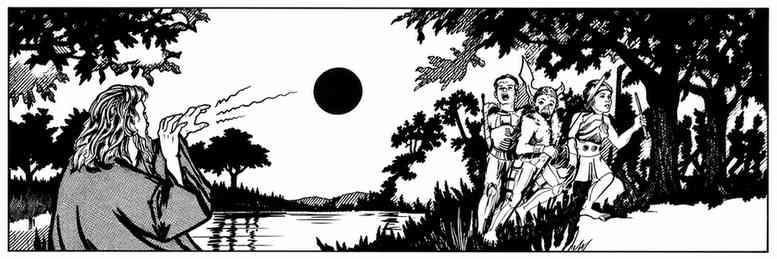
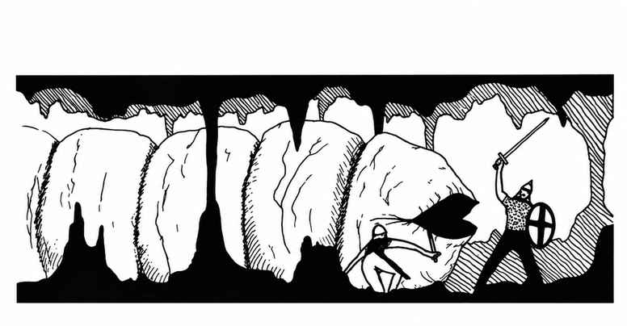

财宝 · Treasure
III. 魔法物品 Magic Items
III.A. 魔法物品表 Magic Items Table
| d100 | 结果 |
|---|---|
| 01–20 | 药水（A） |
| 21–35 | 卷轴（B） |
| 36–40 | 戒指（C） |
| 41–45 | 权杖、法杖与魔杖（D） |
| 46–48 | 杂项魔法物品（E.1） |
| 49–51 | 杂项魔法物品（E.2） |
| 52–54 | 杂项魔法物品（E.3） |
| 55–57 | 杂项魔法物品（E.4） |
| 58–60 | 杂项魔法物品（E.5） |
| 61–75 | 护甲与盾牌（F） |
| 76–86 | 剑（G） |
| 87–00 | 杂项武器（H） |
如前所述，“魔法物品表”经过权重安排，旨在维持游戏平衡。药水、卷轴、护甲与武器出现较多；戒指、权杖及其他杂项魔法物品合计只占 25%。这样可避免魔法师完全主宰游戏——他们已经足够强大，无需再堆积大量额外好处。按本表得到的物品通常会在使用后耗尽并被丢弃。
需要决定魔法物品时，只需掷百分骰并查表 III。各类物品后文均有完整说明；许多物品会重复或近似各种魔法的效果，因此需要备有《高级龙与地下城玩家手册》以供查阅。
建议经验值（XP）是留用物品的角色可获得的奖励。金币出售价值则是角色通常能卖得的金额；若出售物品，经验奖励应按出售价格计算，而非采用表列经验值。还要记住：角色自认留用了物品，因此获得较低经验奖励；若将物品卖给另一位玩家角色，亦按此规则处理（见“经验值”）。
注：许多魔法物品属于消耗品，每次使用都会削弱其力量，最终耗尽。地下城主也可酌情为其他特定物品设定类似限制。
III.A. 药水 Potions
| d100 | 药水 | XP | 出售价值（金币） |
|---|---|---|---|
| 01–03 | 动物控制 Animal Control* | 250 | 400 |
| 04–06 | 千里传音 Clairaudience | 250 | 400 |
| 07–09 | 千里眼 Clairvoyance | 300 | 500 |
| 10–12 | 攀爬 Climbing | 300 | 500 |
| 13–15 | 妄想 Delusion** | — | 150 |
| 16–18 | 缩小 Diminution | 300 | 500 |
| 19–20 | 龙类控制 Dragon Control* | 500–1,000 | 5,000–9,000 |
| 21–23 | 心灵感应 ESP | 500 | 850 |
| 24–26 | 强效治疗 Extra-Healing | 400 | 800 |
| 27–29 | 火焰抗性 Fire Resistance | 250 | 400 |
| 30–32 | 飞行 Flying | 500 | 750 |
| 33–34 | 气化 Gaseous Form | 300 | 400 |
| 35–36 | 巨人控制 Giant Control* | 400–900 | 1,000–6,000 |
| 37–39 | 巨人力量 Giant Strength*（仅战士） | 500–750 | 900–1,400 |
| 40–41 | 生长 Growth | 250 | 300 |
| 42–47 | 治疗 Healing | 200 | 400 |
| 48–49 | 英勇 Heroism（仅战士） | 300 | 500 |
| 50–51 | 人类控制 Human Control* | 500 | 900 |
| 52–54 | 隐形 Invisibility | 250 | 500 |
| 55–57 | 无敌 Invulnerability（仅战士） | 350 | 500 |
| 58–60 | 浮空 Levitation | 250 | 400 |
| 61–63 | 长生 Longevity | 500 | 1,000 |
| 64–66 | 以太油剂 Oil of Etherealness | 600 | 1,500 |
| 67–69 | 润滑油剂 Oil of Slipperiness | 400 | 750 |
| 70–72 | 爱情滤剂 Philter of Love | 200 | 300 |
| 73–75 | 劝服滤剂 Philter of Persuasiveness | 400 | 850 |
| 76–78 | 植物控制 Plant Control | 250 | 300 |
| 79–81 | 自身变形 Polymorph (Self) | 200 | 350 |
| 82–84 | 毒药 Poison** | — | — |
| 85–87 | 加速 Speed | 200 | 450 |
| 88–90 | 超级英勇 Super-Heroism（仅战士） | 450 | 750 |
| 91–93 | 甜水 Sweet Water | 200 | 250 |
| 94–96 | 寻宝 Treasure Finding | 600 | 2,000 |
| 97 | 不死生物控制 Undead Control* | 700 | 2,500 |
| 98–00 | 水下呼吸 Water Breathing | 400 | 900 |
** 地下城主必须误导药水持有者，让其相信药水无害。（详情见相应物品说明。）
- 对被控制生物的具体类型，掷骰确定；参见物品说明。
III.B. 卷轴 Scrolls
| d100 | 结果 | 法术环级范围 |
|---|---|---|
| 01–10 | 1 个法术 | 1–4 |
| 11–16 | 1 个法术 | 1–6 |
| 17–19 | 1 个法术 | 2–9（d8+1），或 2–7*（d6+1） |
| 20–24 | 2 个法术 | 1–4 |
| 25–27 | 2 个法术 | 1–8，或 1–6* |
| 28–32 | 3 个法术 | 1–4 |
| 33–35 | 3 个法术 | 2–9，或 2–7* |
| 36–39 | 4 个法术 | 1–6 |
| 40–42 | 4 个法术 | 1–8，或 1–6* |
| 43–46 | 5 个法术 | 1–6 |
| 47–49 | 5 个法术 | 1–8，或 1–6* |
| 50–52 | 6 个法术 | 1–6 |
| 53–54 | 6 个法术 | 3–8（d6+2），或 3–6*（d4+2） |
| 55–57 | 7 个法术 | 1–8 |
| 58–59 | 7 个法术 | 2–9 |
| 60 | 7 个法术 | 4–9（d6+3），或 4–7*（d4+3） |
| 61–62 | 防护——恶魔 Protection from Demons | 2,500 XP |
| 63–64 | 防护——魔鬼 Protection from Devils | 2,500 XP |
| 65–70 | 防护——元素生物 Protection from Elementals | 1,500 XP |
| 71–76 | 防护——兽化生物 Protection from Lycanthropes | 1,000 XP |
| 77–82 | 防护——魔法 Protection from Magic | 1,500 XP |
| 83–87 | 防护——石化 Protection from Petrification | 2,000 XP |
| 88–92 | 防护——附身 Protection from Possession | 2,000 XP |
| 93–97 | 防护——不死生物 Protection from Undead | 1,500 XP |
| 98–00 | 诅咒卷轴** | — |
- 所有卷轴中有 30%为牧师卷轴（结果 71–00）；牧师卷轴中有 25%属于德鲁伊卷轴。魔法师卷轴中有 10%属于幻术师卷轴。此规则只适用于上表 01–60 的法术卷轴。带星号的环级范围表示牧师法术环级。
** 地下城主必须尽最大努力让玩家相信诅咒卷轴值得阅读，可采用欺骗、胁迫、威吓等手段。例如，若卷轴不被阅读，它可能在普通空气中褪色，但古旧措辞可暗示它在静止的地下城空气中能保持完好。诅咒会立即生效。建议的诅咒如下：
| d100 | 诅咒效果 |
|---|---|
| 01–25 | 阅读者变形成等级相当的怪物，并攻击附近所有生物 |
| 26–30 | 阅读者变成液体并流散 |
| 31–40 | 阅读者及半径 20 尺内所有生物被传送到随机方向 200–1,200 英里外 |
| 41–50 | 阅读者及半径 20 尺内所有生物被传送到另一个星球、位面或时空连续体 |
| 51–75 | 阅读者染上致命疾病，若不在 2–8 轮内治愈便会死亡 |
| 76–90 | 爆炸符文 |
| 91–99 | 附近一件魔法物品失去魔力 |
| 00 | 随机选取一个法术，以 12 级魔法师的施法等级作用于阅读者 |
经验值（XP）：只有能够使用卷轴法术的角色才能获得经验值奖励；每法术环级奖励 100 XP。防护卷轴的经验值已在表中注明。
金币出售价值：任何卷轴在公开市场的售价均为其 XP 价值的 3 倍；防护卷轴售价为其 XP 价值的 5 倍。
III.C. 戒指 Rings
| d100 | 戒指 | XP | 售价（金币） |
|---|---|---|---|
| 01–06 | 反向戒指 Ring of Contrariness | — | 1,000 |
| 07–12 | 妄想戒指 Ring of Delusion | — | 2,000 |
| 13–14 | 召唤巨灵戒指 Ring of Djinni Summoning$ | 3,000 | 20,000 |
| 15 | 元素控制戒指 Ring of Elemental Command | 5,000 | 25,000 |
| 16–21 | 羽落戒指 Ring of Feather Falling | 1,000 | 5,000 |
| 22–27 | 火焰抗性戒指 Ring of Fire Resistance | 1,000 | 5,000 |
| 28–30 | 行动自如戒指 Ring of Free Action | 1,000 | 5,000 |
| 31–33 | 影响人类戒指 Ring of Human Influence$ | 2,000 | 10,000 |
| 34–40 | 隐形戒指 Ring of Invisibility | 1,500 | 7,500 |
| 41–43 | 哺乳动物控制戒指 Ring of Mammal Control$ | 1,000 | 5,000 |
| 44 | 多重祈愿戒指 Ring of Multiple Wishes$ | 5,000 | 25,000 |
| 45–60 | 防护戒指 Ring of Protection | 2,000–4,000 | 10,000–20,000 |
| 61 | 再生戒指 Ring of Regeneration | 5,000 | 40,000 |
| 62–63 | 星辰射击戒指 Ring of Shooting Stars | 3,000 | 15,000 |
| 64–65 | 法术储存戒指 Ring of Spell Storing | 2,500 | 22,500 |
| 66–69 | 法术反转戒指 Ring of Spell Turning | 2,000 | 17,500 |
| 70–75 | 游泳戒指 Ring of Swimming | 1,000 | 5,000 |
| 76–77 | 心灵遥控戒指 Ring of Telekinesis$ | 2,000 | 10,000 |
| 78–79 | 三愿戒指 Ring of Three Wishes$ | 3,000 | 15,000 |
| 80–85 | 保暖戒指 Ring of Warmth | 1,000 | 5,000 |
| 86–90 | 水上行走戒指 Ring of Water Walking | 1,000 | 5,000 |
| 91–98 | 虚弱戒指 Ring of Weakness | — | 1,000 |
| 99 | 法术师戒指 Ring of Wizardry#（仅魔法师） | 4,000 | 50,000 |
| 00 | X光视觉戒指 Ring of X-Ray Vision | 4,000 | 35,000 |
（M）仅魔法师可使用。 $ 这些戒指具有最强大的魔法能力；地下城主可规定其仅有有限 charges，用尽后便会耗尽。
III.D. 权杖、法杖与魔杖 Rods, Staves, and Wands
| d100 | 物品 | XP | 售价（金币） |
|---|---|---|---|
| 01–03 | 吸收权杖 Rod of Absorption（牧师、魔法师） | 7,500 | 40,000 |
| 04 | 迷惑权杖 Rod of Beguiling（牧师、魔法师、盗贼） | 5,000 | 30,000 |
| 05–14 | 取消权杖 Rod of Cancellation（任意职业） | 10,000 | 15,000 |
| 15–16 | 君主威仪权杖 Rod of Lordly Might（战士） | 6,000 | 20,000 |
| 17 | 复活权杖 Rod of Resurrection（牧师） | 10,000 | 35,000 |
| 18 | 支配权杖 Rod of Rulership（任意职业） | 8,000 | 35,000 |
| 19 | 重击权杖 Rod of Smiting（牧师、战士） | 4,000 | 15,000 |
| 20 | 命令法杖 Staff of Command（牧师、魔法师） | 5,000 | 25,000 |
| 21–22 | 治疗法杖 Staff of Curing（牧师） | 6,000 | 25,000 |
| 23 | 魔法师法杖 Staff of the Magi（魔法师） | 15,000 | 75,000 |
| 24 | 力量法杖 Staff of Power（魔法师） | 12,000 | 60,000 |
| 25–27 | 蛇杖 Staff of the Serpent（牧师） | 7,000 | 35,000 |
| 28–31 | 打击法杖 Staff of Striking（牧师、魔法师） | 6,000 | 15,000 |
| 32–33 | 枯萎法杖 Staff of Withering（牧师） | 8,000 | 35,000 |
| 34 | 咒法魔杖 Wand of Conjuration（魔法师） | 7,000 | 35,000 |
| 35–38 | 敌人侦测魔杖 Wand of Enemy Detection（任意职业） | 2,000 | 10,000 |
| 39–41 | 恐惧魔杖 Wand of Fear（牧师、魔法师） | 3,000 | 15,000 |
| 42–44 | 火焰魔杖 Wand of Fire（魔法师） | 4,500 | 25,000 |
| 45–47 | 寒霜魔杖 Wand of Frost（魔法师） | 6,000 | 50,000 |
| 48–52 | 照明魔杖 Wand of Illumination（任意职业） | 2,000 | 10,000 |
| 53–56 | 幻象魔杖 Wand of Illusion（魔法师） | 3,000 | 20,000 |
| 57–59 | 闪电魔杖 Wand of Lightning（魔法师） | 4,000 | 30,000 |
| 60–68 | 魔法侦测魔杖 Wand of Magic Detection（任意职业） | 2,500 | 25,000 |
| 69–73 | 金属与矿物侦测魔杖 Wand of Metal and Mineral Detection（任意职业） | 1,500 | 7,500 |
| 74–78 | 魔法飞弹魔杖 Wand of Magic Missiles（任意职业） | 4,000 | 35,000 |
| 79–86 | 否定魔杖 Wand of Negation（任意职业） | 3,500 | 15,000 |
| 87–89 | 麻痹魔杖 Wand of Paralyzation（魔法师） | 3,500 | 25,000 |
| 90–92 | 变形魔杖 Wand of Polymorphing（魔法师） | 3,500 | 25,000 |
| 93–94 | 暗门与陷阱探测魔杖 Wand of Secret Door and Trap Location（任意职业） | 5,000 | 40,000 |
| 95–00 | 奇迹魔杖 Wand of Wonder（任意职业） | 6,000 | 10,000 |
（C）仅牧师可用；（F）仅战士可用；（M）仅魔法师可用；（T）仅盗贼可用；“任意职业”表示任何职业均可使用，除非另有职业限制。
- 假设物品 charges 充足。
III.E. 杂项魔法物品 Miscellaneous Magic

表 E.1 Miscellaneous Magic Table E.1
| d100 | 物品 | 售价（金币） |
|---|---|---|
| 01–02 | 炼金壶 Alchemy Jug | 12,000 |
| 03–04 | 定位护符 Amulet of Inescapable Location | 1,000 |
| 05 | 生命防护护符 Amulet of Life Protection | 20,000 |
| 06–07 | 位面护符 Amulet of the Planes | 30,000 |
| 08–11 | 防侦测与定位护符 Amulet of Proof Against Detection and Location | 15,000 |
| 12–13 | 克瓦利什装置 Apparatus of Kwalish | 35,000 |
| 14–16 | 定向箭 Arrow of Direction | 17,500 |
| 17 | 神器或遗物 Artifact or Relic（见后文专表） | — |
| 18–20 | 豆袋 Bag of Beans | 5,000 |
| 21 | 吞噬袋 Bag of Devouring | 1,500 |
| 22–26 | 次元袋 Bag of Holding | 25,000 |
| 27 | 转化袋 Bag of Transmuting | 500 |
| 28–29 | 戏法袋 Bag of Tricks | 15,000 |
| 30–31 | 丰盈药水烧瓶 Beaker of Plentiful Potions | 12,500 |
| 32 | 折叠船 Boat, Folding | 25,000 |
| 33 | 崇高功德之书（仅牧师） Book of Exalted Deeds | 40,000 |
| 34 | 无限法术之书 Book of Infinite Spells | 50,000 |
| 35 | 邪恶黑暗之书（仅牧师） Book of Vile Darkness | 40,000 |
| 36 | 舞蹈长靴 Boots of Dancing | 5,000 |
| 37–42 | 精灵长靴 Boots of Elvenkind | 5,000 |
| 43–47 | 浮空长靴 Boots of Levitation | 15,000 |
| 48–51 | 迅捷长靴 Boots of Speed | 20,000 |
| 52–55 | 大步弹跃长靴 Boots of Striding and Springing | 20,000 |
| 56–58 | 控水元素之碗（仅魔法师） Bowl Commanding Water Elementals | 25,000 |
| 59 | 水葬之碗（仅魔法师） Bowl of Watery Death | 1,000 |
| 60–79 | 防御护腕 Bracers of Defense | 3,000* |
| 80–81 | 无防护护腕 Bracers of Defenselessness | 2,000 |
| 82–84 | 控火元素香炉（仅魔法师） Brazier Commanding Fire Elementals | 25,000 |
| 85 | 催眠烟雾火盆（仅魔法师） Brazier of Sleep Smoke | 1,000 |
| 86–92 | 防护胸针 Brooch of Shielding | 10,000 |
| 93 | 动画攻击扫帚 Broom of Animated Attack | 3,000 |
| 94–98 | 飞行扫帚 Broom of Flying | 10,000 |
| 99–00 | 巴克纳德永满钱袋 Bucknard's Everfull Purse | 15,000／25,000／40,000 |
- 每高于 AC 10 一档计价；例如 AC 6 的防御护腕价值为 2,000 XP，售出价值为 12,000 金币。
表 E.2 Miscellaneous Magic Table E.2
| d100 | 物品 | XP | 售价（金币） |
|---|---|---|---|
| 01–06 | 祈祷蜡烛 Candle of Invocation（仅牧师） | 1,000 | 5,000 |
| 07–08 | 飞毯 Carpet of Flying | 7,500 | 25,000 |
| 09–10 | 控气元素香炉 Censer of Controlling Air Elementals（仅魔法师） | 4,000 | 25,000 |
| 11 | 敌意气元素召唤香炉 Censer of Summoning Hostile Air Elementals（仅魔法师） | — | 1,000 |
| 12–13 | 开启风铃 Chime of Opening | 3,500 | 20,000 |
| 14 | 饥饿风铃 Chime of Hunger | — | — |
| 15–18 | 位移斗篷 Cloak of Displacement | 3,000 | 17,500 |
| 19–27 | 精灵斗篷 Cloak of Elvenkind | 1,000 | 6,000 |
| 28–30 | 蝠鲼斗篷 Cloak of the Manta Ray | 2,000 | 12,500 |
| 31–32 | 毒性斗篷 Cloak of Poisonousness | — | 2,500 |
| 33–55 | 防护斗篷 Cloak of Protection | 1,000* | 10,000* |
| 56–60 | 水晶球 Crystal Ball（仅魔法师） | 1,000** | 5,000** |
| 61 | 催眠水晶球 Crystal Hypnosis Ball（仅魔法师） | — | 3,000 |
| d100 | 物品 | XP | 售价（金币） |
|---|---|---|---|
| 62–63 | 力量立方 Cube of Force | 3,000 | 20,000 |
| 64–65 | 寒霜抗性立方 Cube of Frost Resistance | 2,000 | 14,000 |
| 66–67 | 位面立方 Cubic Gate | 5,000 | 17,500 |
| 68–69 | 德恩即时堡垒 Daern's Instant Fortress | 7,000 | 27,500 |
| 70–72 | 无尽之水瓶 Decanter of Endless Water | 1,000 | 3,000 |
| 73–76 | 万象牌组 Deck of Many Things | — | 10,000 |
| 77 | 震聋鼓 Drums of Deafening | — | 500 |
| 78–79 | 恐慌鼓 Drums of Panic | 6,500 | 35,000 |
| 80–85 | 显形尘 Dust of Appearance | 1,000 | 4,000 |
| 86–91 | 消隐尘 Dust of Disappearance | 2,000 | 8,000 |
| 92 | 喷嚏／窒息尘 Dust of Sneezing and Choking | — | 1,000 |
| 93 | 火巨灵瓶 Efreeti Bottle | 9,000 | 45,000 |
| 94 | 永烟瓶 Eversmoking Bottle | 500 | 2,500 |
| 95 | 迷人之眼 Eyes of Charming（仅魔法师） | 4,000 | 24,000 |
| 96–97 | 鹰眼 Eyes of the Eagle | 3,500 | 18,000 |
| 98–99 | 微察之眼 Eyes of Minute Seeing | 2,000 | 12,500 |
| 00 | 石化之眼 Eyes of Petrification | — | —* |
- 逆转效果的 XP 为 12,500，售价为 50,000 金币。
** 假设拥有全部 charges。
- 按防护加值计价。
表 E.3 Miscellaneous Magic Table E.3
| d100 | 物品 | XP | 售价（金币） |
|---|---|---|---|
| 01–15 | 奇妙力量雕像 Figurine of Wondrous Power | 100* | 1,000* |
| 16 | 诅咒酒瓶 Flask of Curses | — | 1,000 |
| 17–18 | 敏捷手套 Gauntlets of Dexterity | — | 10,000 |
| 19–20 | 笨拙手套 Gauntlets of Fumbling | — | 1,000 |
| 21–22 | 食人魔力量手套 Gauntlets of Ogre Power（牧师、战士、盗贼） | 1,000 | 15,000 |
| 23–25 | 游泳与攀爬手套 Gauntlets of Swimming and Climbing（牧师、战士、盗贼） | 1,000 | 10,000 |
| 26 | 光辉宝石 Gem of Brightness | 2,000 | 17,500 |
| 27 | 观视宝石 Gem of Seeing | 2,000 | 25,000 |
| 28 | 性别转换腰带 Girdle of Femininity/Masculinity（牧师、战士、盗贼） | — | 1,000 |
| 29 | 巨人力量腰带 Girdle of Giant Strength（牧师、战士、盗贼） | 200 | 2,500 |
| 30 | 辉煌头盔 Helm of Brilliance | 2,500 | 60,000 |
| 31–35 | 通晓语言与阅读魔法头盔 Helm of Comprehending Languages and Reading Magic | 1,000 | 12,500 |
| 36–37 | 阵营相反头盔 Helm of Opposite Alignment | — | 1,000 |
| 38–39 | 心灵感应头盔 Helm of Telepathy | 3,000 | 35,000 |
| 40 | 传送头盔 Helm of Teleportation | 2,500 | 30,000 |
| 41–45 | 水下行动头盔 Helm of Underwater Action | 1,000 | 10,000 |
| 46 | 爆裂号角 Horn of Blasting | 5,000 | 55,000 |
| 47–48 | 气泡号角 Horn of Bubbles | — | — |
| 49 | 崩塌号角 Horn of Collapsing | 1,500 | 25,000 |
| 50–53 | 海妖号角 Horn of the Tritons（牧师、战士） | 2,000 | 17,500 |
| 54–60 | 瓦尔哈拉号角 Horn of Valhalla | 1,000* | 15,000** |
| 61–63 | 迅捷马掌 Horseshoes of Speed | 2,000 | 10,000 |
| 64–65 | 风精马掌 Horseshoes of a Zephyr | 1,500 | 7,500 |
| 66–70 | 冥想熏香 Incense of Meditation（牧师） | 500 | 7,500 |
| 71 | 执念熏香 Incense of Obsession（牧师） | — | 500 |
| 72 | 伊恩石 Ioun Stones | 300*** | 5,000*** |
| 73–78 | 吟游诗人乐器 Instrument of the Bards | 1,000**** | 5,000**** |
| 79–80 | 铁瓶 Iron Flask | — | — |
| 81–85 | 闪电标枪 Javelin of Lightning（战士） | 250 | 3,000 |
| 86–90 | 穿刺标枪 Javelin of Piercing（战士） | 250 | 3,000 |
| 91 | 攻击宝石 Jewel of Attacks | — | 1,000 |
| 92 | 无瑕宝石 Jewel of Flawlessness | — | 每个切面 1,000 |
| 93–00 | 凯奥格托姆药膏 Keoghtom's Ointment | 500 | 10,000 |
青铜号角价值为表列数值的两倍，铁号角为三倍。 * 每颗石头。 **** 按吟游诗人乐器等级计算。
- 每个雕像生命骰对应的价值。
表 E.4 Miscellaneous Magic Table E.4
| d100 | 物品 | XP | 售价（金币） |
|---|---|---|---|
| 01 | 强力咒法秘典 Libram of Gainful Conjuration（魔法师） | 8,000 | 40,000 |
| 02 | 不可言诅咒秘典 Libram of Ineffable Damnation（魔法师） | 8,000 | 40,000 |
| 03 | 银色魔法秘典 Libram of Silver Magic（魔法师） | 8,000 | 40,000 |
| 04 | 建造竖琴 Lyre of Building | 5,000 | 30,000 |
| 05 | 体魄健康手册 Manual of Bodily Health | 5,000 | 50,000 |
| 06 | 有益锻炼手册 Manual of Gainful Exercise | 5,000 | 50,000 |
| 07 | 魔像手册 Manual of Golems（牧师、魔法师） | 3,000 | 30,000 |
| 08 | 武艺精湛手册 Manual of Puissant Skill at Arms（战士） | 8,000 | 40,000 |
| 09 | 动作敏捷手册 Manual of Quickness of Action | 5,000 | 50,000 |
| 10 | 偷窃巧手手册 Manual of Stealthy Pilfering（盗贼） | 8,000 | 40,000 |
| 11 | 泰坦鹤嘴锄 Mattock of the Titans（战士） | 3,500 | 7,000 |
| 12 | 泰坦战锤 Maul of the Titans | 4,000 | 12,000 |
| 13–15 | 心灵感应护符 Medallion of ESP | 1,000／3,000 | 10,000／30,000 |
| 16–17 | 思想投射护符 Medallion of Thought Projection | — | 1,000 |
| 18 | 生命囚禁镜 Mirror of Life Trapping（魔法师） | 2,500 | 25,000 |
| 19 | 心灵威能镜 Mirror of Mental Prowess | 5,000 | 50,000 |
| 20 | 对立镜 Mirror of Opposition | — | 2,000 |
| 21–23 | 适应护符 Necklace of Adaptation | 1,000 | 10,000 |
| 24–27 | 飞弹项链 Necklace of Missiles | 每颗飞弹 50* | 每颗飞弹 200* |
| 28–33 | 祈祷珠项链 Necklace of Prayer Beads（牧师） | 每颗珠子 500** | 每颗珠子 3,000** |
| 34–35 | 绞杀项链 Necklace of Strangulation | — | 1,000 |
| 36–38 | 捕缚网 Net of Entrapment（牧师、战士、盗贼） | 1,000 | 7,500 |
| 39–42 | 缠网 Net of Snaring（牧师、战士、盗贼） | 1,000 | 6,000 |
| 43–44 | 诺祖尔奇妙颜料 Nolzur's Marvelous Pigments | 每罐 500*** | 3,000*** |
| 45–46 | 力量珍珠 Pearl of Power（魔法师） | 每法术环级 200** | 2,000**** |
| 47–48 | 感知珍珠 Pearl of Wisdom（牧师） | 500 | 5,000 |
| 49–50 | 腐烂护符 Periapt of Foul Rotting | — | 1,000 |
| 51–53 | 健康护符 Periapt of Health | 1,000 | 10,000 |
| 54–60 | 防毒护符 Periapt of Proof Against Poison | 1,500 | 12,500 |
| 61–64 | 创伤闭合护符 Periapt of Wound Closure | 1,000 | 10,000 |
| 65–70 | 忠信圣匣 Phylactery of Faithfulness（牧师） | 1,000 | 7,500 |
| 71–74 | 长寿圣匣 Phylactery of Long Years（牧师） | 3,000 | 25,000 |
| 75–76 | 怪物吸引圣匣 Phylactery of Monstrous Attention（牧师） | — | 2,000 |
| 77–84 | 下水道笛 Pipes of the Sewers | 1,750 | 8,500 |
| 85 | 便携洞 Portable Hole | 5,000 | 50,000 |
| 86–00 | 坎尔的羽毛信物 Quaal's Feather Token | 500／1,000 | 2,000／7,000 |
每颗特殊珠子。 * 每罐颜料。 **** 每法术等级。
- 每颗飞弹的生命骰。
表 E.5 特殊杂项魔法物品 Miscellaneous Magic Table E.5 Special
| d100 | 物品 | 售价（金币） |
|---|---|---|
| 01 | 矮人诸王之斧 Axe of the Dwarvish Lords | 55,000 |
| 02 | 巴巴·雅嘎的小屋 Baba Yaga's Hut | 90,000 |
| 03–04 | 无限位面法典 Codex of the Infinite Planes | 62,500 |
| 05–20 | 力量王冠 Crown of Might | 50,000 |
| 21 | 黯焰水晶 Crystal of the Ebon Flame | 75,000 |
| 22 | 阿尔·阿克巴之杯与护符 Cup and Talisman of Al'Akbar | 85,000 |
| 23–24 | 维克那之眼 Eye of Vecna | 35,000 |
| 25 | 维克那之手 Hand of Vecna | 60,000 |
| 26 | 休沃德的神秘管风琴 Heward's Mystical Organ | 25,000 |
| 27 | 变化号角 Horn of Change | 20,000 |
| 28–29 | 阿恩德的无敌外套 Invulnerable Coat of Arnd | 47,500 |
| 30–31 | 无情者图恩尼的铁瓶 Iron Flask of Tuerny the Merciless | 50,000 |
| 32 | 无价美人石 Jacinth of Inestimable Beauty | 100,000 |
| 33 | 乔海迪之面具 Johydee's Mask | 40,000 |
| 34–35 | 库洛斯之羽笔 Kuroth's Quill | 27,500 |
| 36–37 | 圣库斯伯特之锤 Mace of Cuthbert | 35,000 |
| 38 | 疯狂卢姆之机械 Machine of Lum the Mad | 72,500 |
| 39–40 | 强大的勒乌克-O侍从 Mighty Servant of Leuk-O | 185,000 |
| 41–47 | 巨龙控制宝珠 Orb of Dragonkind | 10,000–80,000 |
| 48–63 | 力量宝珠 Orb of Might | 100,000 |
| 64 | 伊莉莎女王的神奇夜莺 Queen Ehlissa's Marvelous Nightingale | 112,500 |
| 65–66 | Ye'Cind 竖笛 Recorder of Ye'Cind | 80,000 |
| 67–68 | 盖克斯戒指 Ring of Gaxx | 17,500 |
| 69–74 | 七段权杖 Rod of Seven Parts | 25,000 |
| 75–91 | 力量权杖 Sceptre of Might | 150,000 |
| 92 | 卡斯之剑 Sword of Kas | 97,000 |
| 93–98 | 达尔弗-纳尔之牙 Teeth of Dahlver-Nar | 每颗 5,000 |
| 99 | 众神王座 Throne of the Gods | — |
| 00 | 奥库斯魔杖 Wand of Orcus | 10,000 |
注：表 E.5 中的物品不会提供经验值。
III.F. 护甲与盾牌 Armor and Shield
| d100 | 物品 | XP | 售价（金币） |
|---|---|---|---|
| 01–05 | +1 链甲 Chain Mail +1 | 600 | 3,500 |
| 06–09 | +2 链甲 Chain Mail +2 | 1,200 | 7,500 |
| 10–11 | +3 链甲 Chain Mail +3 | 2,000 | 12,500 |
| 12–19 | +1 皮甲 Leather Armor +1 | 300 | 2,000 |
| 20–26 | +1 板甲 Plate Mail +1 | 800 | 5,000 |
| 27–32 | +2 板甲 Plate Mail +2 | 1,750 | 10,500 |
| 33–35 | +3 板甲 Plate Mail +3 | 2,750 | 15,500 |
| 36–37 | +4 板甲 Plate Mail +4 | 3,500 | 20,500 |
| 38 | +5 板甲 Plate Mail +5 | 4,500 | 27,500 |
| 39 | 无相位板甲 Plate Mail of Etherealness | 5,000 | 30,000 |
| 40–44 | 易损板甲 Plate Mail of Vulnerability | — | 1,500 |
| 45–50 | +1 环甲 Ring Mail +1 | 400 | 2,500 |
| 51–55 | +1 鳞甲 Scale Mail +1 | 500 | 3,000 |
| 56–59 | +2 鳞甲 Scale Mail +2 | 1,100 | 6,750 |
| 60–63 | +1 片甲 Splint Mail +1 | 700 | 4,000 |
| 64–66 | +2 片甲 Splint Mail +2 | 1,500 | 8,500 |
| 67–68 | +3 片甲 Splint Mail +3 | 2,250 | 14,500 |
| 69 | +4 片甲 Splint Mail +4 | 3,000 | 19,000 |
| 70–75 | +1 钉皮甲 Studded Leather +1 | 400 | 2,500 |
| 76–84 | +1 盾牌 Shield +1 | 250 | 2,500 |
| 85–89 | +2 盾牌 Shield +2 | 500 | 5,000 |
| 90–93 | +3 盾牌 Shield +3 | 800 | 8,000 |
| 94–95 | +4 盾牌 Shield +4 | 1,200 | 12,000 |
| 96 | +5 盾牌 Shield +5 | 1,750 | 17,500 |
| 97 | 大型盾牌 +1，且对飞弹攻击 +4 Shield, large, +1, +4 vs. missiles | 400 | 4,000 |
| 98–00 | −1 盾牌，吸引飞弹 Shield −1, missile attractor | — | 750 |
所有护甲中，65% 为人形尺寸，20% 为精灵尺寸，10% 为矮人尺寸，另有 5% 为侏儒或半身人尺寸。
III.G. 剑 Swords

| d100 | 物品 | XP | 售价（金币） |
|---|---|---|---|
| 01–25 | +1 剑 Sword +1 | 400 | 2,000 |
| 26–30 | +1 剑，对抗魔法师与附魔生物 +2 Sword +1, +2 vs. magic-using and enchanted creatures | 600 | 3,000 |
| 31–35 | +1 剑，对抗兽化生物与变形者 +3 Sword +1, +3 vs. lycanthropes and shape changers | 700 | 3,500 |
| 36–40 | +1 剑，对抗再生生物 +3 Sword +1, +3 vs. regenerating creatures | 800 | 4,000 |
| 41–45 | +1 剑，对抗爬行类生物 +4 Sword +1, +4 vs. reptiles | 800 | 4,000 |
| 46–49 | 火焰之舌 +1 剑：对抗再生生物 +2；对抗畏火、易燃或禽类生物 +3；对抗不死生物 +4 Sword +1, Flame Tongue | 900 | 4,500 |
| 50 | 幸运之刃 +1 剑 Sword +1, Luck Blade | 1,000 | 5,000 |
| 51–58 | +2 剑 Sword +2 | 800 | 4,000 |
| 59–62 | 巨人杀手 +2 剑 Sword +2, Giant Slayer | 900 | 4,500 |
| 63–66 | 屠龙者 +2 剑 Sword +2, Dragon Slayer | 900 | 4,500 |
| 67 | 九命窃命剑 +2 Sword +2, Nine Lives Stealer | 1,600 | 8,000 |
| 68–71 | +3 剑 Sword +3 | 1,400 | 7,000 |
| 72–74 | 霜燃之刃 +3：对抗火系／栖居火焰生物 +6 Sword +3, Frost Brand | 1,600 | 8,000 |
| 75–76 | +4 剑 Sword +4 | 2,000 | 10,000 |
| 77 | 防御者 +4 剑 Sword +4, Defender | 3,000 | 15,000 |
| 78 | +5 剑 Sword +5 | 3,000 | 15,000 |
| 79 | 防御者 +5 剑 Sword +5, Defender | 3,600 | 18,000 |
| 80 | 神圣复仇者 +5 剑 Sword +5, Holy Avenger | 4,000 | 20,000 |
| 81 | 舞蹈剑 Sword of Dancing | 4,400 | 22,000 |
| 82 | 创伤剑 Sword of Wounding | 4,400 | 22,000 |
| 83 | 窃命剑 Sword of Life Stealing | 5,000 | 25,000 |
| 84 | 锋锐剑 Sword of Sharpness | 7,000 | 35,000 |
| 85 | 斩首剑 Sword, Vorpal Weapon | 10,000 | 50,000 |
| 86–90 | +1 诅咒剑 Sword +1, Cursed | 400 | — |
| 91–95 | −2 诅咒剑 Sword −2, Cursed | 600 | — |
| 96–00 | 狂暴诅咒剑 Sword, Cursed Berserking | 900 | — |
注：所有剑中，70% 为长剑，2½% 为阔剑，5% 为短剑，4% 为手半剑，18½% 为双手剑。
III.H. 杂项武器 Miscellaneous Weapons
| d100 | 物品 | XP | 售价（金币） |
|---|---|---|---|
| 01–08 | +1 箭（2–24 支） Arrow +1, 2–24 in number | 20 | 120 |
| 09–12 | +2 箭（2–16 支） Arrow +2, 2–16 in number | 50 | 300 |
| 13–14 | +3 箭（2–12 支） Arrow +3, 2–12 in number | 75 | 450 |
| 15 | 诛杀之箭 Arrow of Slaying | 250 | 2,500 |
| 16–20 | +1 斧 Axe +1 | 300 | 1,750 |
| 21–22 | +2 斧 Axe +2 | 600 | 3,750 |
| 23 | 投掷 +2 斧 Axe +2, Throwing | 750 | 4,500 |
| 24 | +3 斧 Axe +3 | 1,000 | 7,000 |
| 25–27 | +1 战斧 Battle Axe +1 | 400 | 2,500 |
| 28–32 | +2 弩矢（2–20 支） Bolt +2, 2–20 in number | 50 | 300 |
| 33–35 | +1 弓 Bow +1 | 500 | 3,500 |
| 36 | 精准 +3 弩 Crossbow of Accuracy, +3 | 2,000 | 12,000 |
| 37 | 远距弩 Crossbow of Distance | 1,500 | 7,500 |
| 38 | 速射弩 Crossbow of Speed | 1,500 | 7,500 |
| 39–46 | +1 匕首，对体型小于人类的生物 +2 Dagger +1, +2 vs. creatures smaller than man-sized | 100 | 750 |
| 47–50 | +2 匕首，对体型大于人类的生物 +3 Dagger +2, +3 vs. creatures larger than man-sized | 250 | 2,000 |
| 51 | 毒液匕首 Dagger of Venom | 350 | 3,000 |
| 52–56 | +1 连枷 Flail +1 | 450 | 4,000 |
| 57–60 | +1 战锤 Hammer +1 | 300 | 2,500 |
| 61–62 | +2 战锤 Hammer +2 | 650 | 6,000 |
| 63 | +3 矮人投掷锤 Hammer +3, Dwarven Thrower | 1,500 | 15,000 |
| 64 | 雷霆之锤 Hammer of Thunderbolts | 2,500 | 25,000 |
| 65–67 | +2 标枪 Javelin +2 | 750 | 5,000 |
| 68–72 | +1 钉头锤 Mace +1 | 350 | 3,000 |
| 73–75 | +2 钉头锤 Mace +2 | 700 | 4,500 |
| 76 | 破邪钉头锤 Mace of Disruption | 1,750 | 17,500 |
| 77 | +4 钉头锤 Mace +4 | 1,500 | 15,000 |
| 78–80 | +1 军用镐 Military Pick +1 | 350 | 2,500 |
| 81–83 | +1 晨星锤 Morning Star +1 | 400 | 3,000 |
| 84–88 | +2 弯刀 Scimitar +2 | 750 | 6,000 |
| 89 | 寻觅 +2 投石索 Sling of Seeking +2 | 700 | 7,000 |
| 90–94 | +1 长矛 Spear +1 | 500 | 3,000 |
| 95–96 | +2 长矛 Spear +2 | 1,000 | 6,500 |
| 97 | +3 长矛 Spear +3 | 1,750 | 15,000 |
| 98–99 | 诅咒反噬长矛 Spear, Cursed Backbiter | — | 1,000 |
| 00 | +3 三叉戟（军用叉） Trident (Military Fork) +3 | 1,500 | 12,500 |
本节内容
上一节：不死生物或装置造成的能级吸取 · Energy Draining by Undead or Device
下一节：随机财宝判定 · Random Treasure Determination